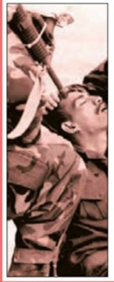
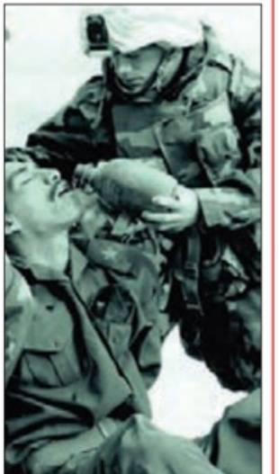
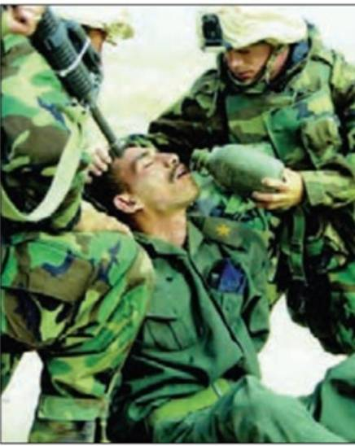

تصاویر بیطرف نیستند!
با مثالهای ملموس از جنوب ایران و جزیره قشم
🎯 ایده محوری درس
رسانهها واقعیت را مستقیم به ما نشان نمیدهند؛ بلکه آن را «بازنمایی» میکنند. هیچ رسانهای بیطرف نیست و هر تصویری که میبینیم، نتیجه یک انتخاب است: چه چیزی نشان داده شود و چه چیزی حذف شود.
🔍 بازنمایی (Representation)
نشان دادن واقعیت به شکلی خاص، با هدف انتقال تفسیر و تحلیل فرستنده به ذهن مخاطب، طوری که مخاطب تفاوت میان واقعیت و تفسیر را احساس نکند. بازنمایی لزوماً دروغ نیست؛ میتواند بخشی از واقعیت باشد که ماهرانه انتخاب شده است.
✂️ برش (Cropping)
حذف بخشی از تصویر برای هدایت توجه مخاطب به بخش خاصی از واقعیت. با یک برش ساده، میتوان از یک عکس واحد، دو پیام کاملاً متضاد ساخت. برش مغرضانه میتواند محتوای عکس را کاملاً تغییر دهد.
📱 زندگی برشی
انتشار تنها بخشهای شاد، رنگارنگ و موفق زندگی در شبکههای اجتماعی، با استفاده از فیلتر و افکت. غمها، شکستها و مشکلات پنهان میمانند و مخاطب احساس میکند زندگی دیگران کاملتر از زندگی اوست.
🎭 کلیشهسازی (Stereotyping)
ارائه تصویری سادهشده و قالبی از یک گروه یا پدیده، که اغلب با اغراق و تعمیم همراه است. کلیشهها در رسانهها با تکرار بازنماییهای خاص، در ذهن مخاطب تثبیت میشوند.
💡 نکته کلیدی
هنر مخاطب فعال این است که با هوشمندی و نقادی، تفاوت میان واقعیت و بازنمایی رسانهای را کشف کند. همیشه بپرسید: «چه چیزی خارج از کادر مانده است؟»
🖼️ مثال کلاسیک کتاب: عکس جنگ
در بحبوحه جنگ آمریکا علیه صدام، یک عکس واقعی با دو برش متفاوت در شبکههای اجتماعی منتشر شد. به هر دو تصویر نگاه کنید. هر کدام چه پیامی به شما میدهند؟



هر دو تصویر از یک عکس واقعی هستند! رسانهها با تکنیک «برش»، بخشی از واقعیت را حذف میکنند تا پیام مورد نظر خود را القا کنند. تصویر سمت راست شما را عصبانی میکند و تصویر سمت چپ احساساتی. اما تصویر اصلی نشان میدهد که هر دو در حال رخ دادن هستند.
نتیجه: هیچ تصویری بیطرف نیست!
🏝️ چرا قشم؟
جزیره قشم با درههای مریخی، سواحل رویایی، جنگلهای حرا و بافت تاریخی لافت، به یکی از محبوبترین لوکیشنهای عکاسی و تولید محتوا در ایران تبدیل شده است. بسیاری از آتلیهها و بلاگرها، قشم را برای عکاسی انتخاب میکنند. اما همین جذابیت، آن را به میدان نبرد «بازنمایی» هم تبدیل کرده است!

دره ستارگان
بلاگرها اغلب فقط بخشهای خاص و رنگارنگ این دره را با فیلترهای تند منتشر میکنند. اما در واقعیت، این دره در ساعات ظهر نور تند و سایههای خشن دارد و ممکن است پر از گردشگر باشد. برش و فیلتر، آن را به یک «بهشت دستنیافتنی» تبدیل میکند.

تنگه چاهکوه
عکسهای اینستاگرامی معمولاً فقط دیوارهای بلند و نورهای عجیب را نشان میدهند. اما چه چیزی خارج از کادر است؟ مسیرهای سخت، گرمای طاقتفرسا، و زبالههایی که گردشگران جا میگذارند. بازنمایی رسانهای، فقط «زیبایی» را انتخاب میکند.
📱 زندگی برشی در قشم
یک بلاگر سفر به قشم را تصور کنید. او در اینستاگرام چه نشان میدهد؟
گرما، شلوغی، هزینه بالا، خستگی مسیر، زباله در طبیعت
لبخند، لباس رنگارنگ، غروب آرام، کافه دنج، فیلتر گرم
این همان «زندگی برشی» است: انتشار تنها برشهای شاد و موفق، با حذف کامل مشکلات. مخاطب فکر میکند زندگی بلاگر «کامل» است، در حالی که فقط یک برش از واقعیت را دیده است.
🎣 مثال بومی: صیادان قشم
عکس یک صیاد در حال کشیدن تور، میتواند دو بازنمایی کاملاً متفاوت داشته باشد:
🔴 برش اول: فقط چهره خسته و تور پاره را نشان میدهد → پیام: «فقر و سختی»
🟢 برش دوم: فقط غروب زیبا و دریای آرام را نشان میدهد → پیام: «آرامش و زندگی ساده»
اما واقعیت کامل ترکیبی از هر دو است: سختی کار + زیبایی طبیعت. هر رسانهای بسته به هدفش، یکی از این برشها را انتخاب میکند.
❓ پرسشهای بحث گروهی
این پرسشها را در گروه واتساپ مطرح کنید و از هنرجویان بخواهید با ذکر مثال از قشم یا محل زندگی خود پاسخ دهند.
- ۱ چرا هیچ تصویری بیطرف نیست؟ با یک مثال از عکسهای قشم توضیح دهید.
- ۲ تفاوت «بازنمایی» و «دروغ» چیست؟ آیا هر بازنمایی لزوماً دروغ است؟
- ۳ یک عکس از صفحه اینستاگرام خود یا دوستانتان انتخاب کنید. چه بخشی از واقعیت در آن حذف شده است؟
- ۴ اگر بخواهید از جزیره قشم یک عکس «صادقانه» بگیرید که همه واقعیت را نشان دهد، چه چیزی را در کادر قرار میدهید و چه چیزی را خارج از کادر میگذارید؟
- ۵ چرا رسانهها از «برش» استفاده میکنند؟ چه کسی از این برش سود میبرد؟
💬 تکلیف گروهی
یک عکس چالشی از منطقه خود (قشم، بندرعباس، یا هر جای جنوب) پیدا کنید که با برش یا ویرایش، پیام آن تغییر کرده باشد. آن را در گروه بفرستید و با مفهوم «بازنمایی» تحلیل کنید.